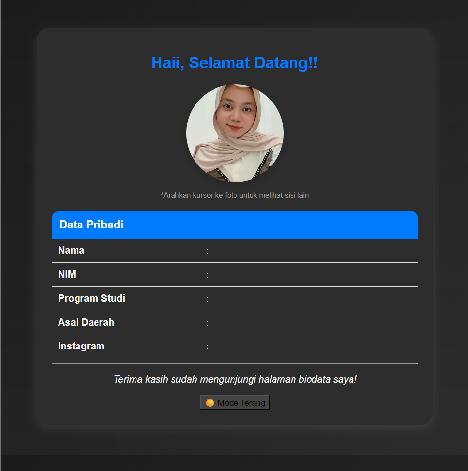
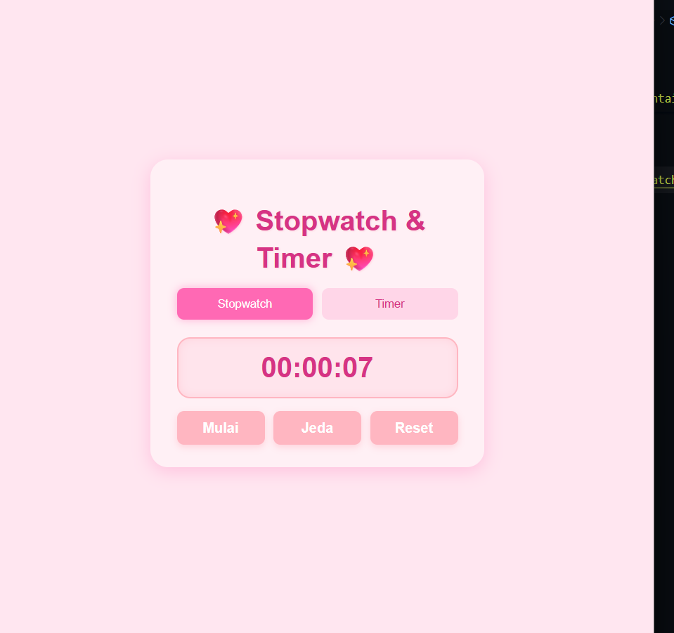

| No | Nama Proyek | Deskripsi | Tahun | Teknologi | Tautan |
|---|---|---|---|---|---|
| 1 | Website Undangan Digital | Website undangan digital yang menampilkan informasi acara seperti nama pasangan, tanggal, lokasi, serta galeri foto. Dilengkapi dengan fitur hitung mundur dan formulir kehadiran tamu. | 2024 | HTML, CSS, JavaStript | Lihat Proyek |
| 2 | Web Biodata Pribadi | Website sederhana yang menampilkan biodata, pendidikan, keahlian, dan kontak pribadi dengan tampilan responsif. | 2025 | HTML, CSS, JavaScript | Lihat Proyek |
| 3 | Web StopWatch Timer | Stopwatch berfungsi untuk menghitung durasi waktu secara real-time, sedangkan timer digunakan untuk menghitung mundur dari waktu yang ditentukan. | 2023 | HTML,CSS, JavaStript | Lihat Proyek |
Proyek Saya
Berikut beberapa proyek sederhana yang saya kerjakan selama masa perkuliahan. Setiap proyek menjadi bagian dari proses belajar saya dalam mengembangkan kemampuan di bidang web development dan pemrograman.
Tampilan Proyek

Website Undangan Digital
Website undangan digital yang menampilkan informasi acara seperti nama pasangan, tanggal, lokasi, serta galeri foto
Lihat Tampilan

Web Biodata Pribadi
Website sederhana yang menampilkan biodata, pendidikan, keahlian, dan kontak pribadi dengan tampilan responsif.
Lihat Tampilan

StopWatch Timer
Stopwatch berfungsi untuk menghitung durasi waktu secara real-time, sedangkan timer digunakan untuk menghitung mundur dari waktu yang ditentukan.
Lihat TampilanTertarik Berdiskusi atau Kolaborasi?
Saya senang mempelajari hal baru dan berkolaborasi dalam proyek pengembangan web atau aplikasi.
Hubungi Saya di Instagram